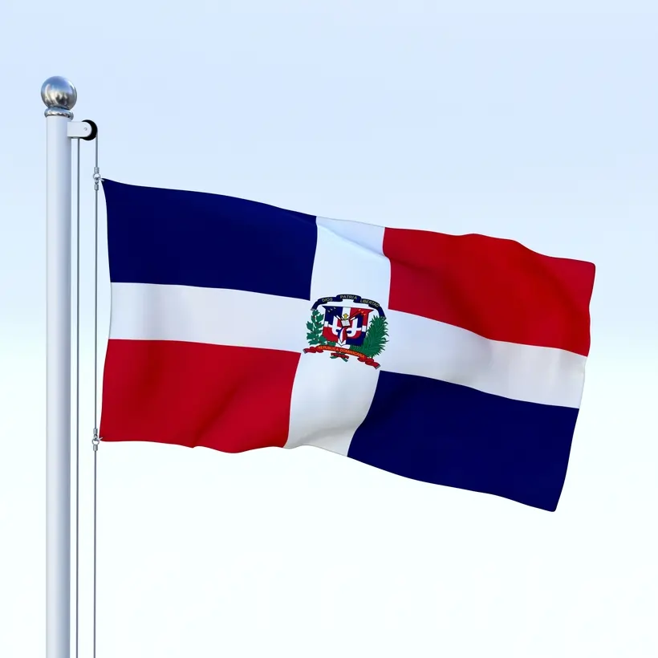
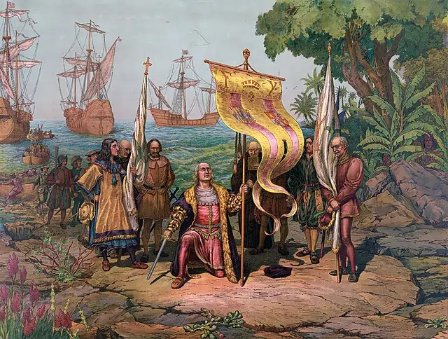
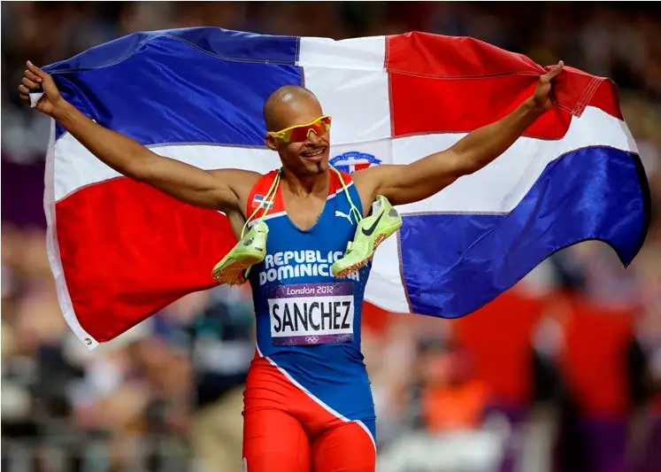

Discover Dominican Republic Fun Facts! 🇩🇴
Explore the rich history, culture, and notable achievements of the DR in a fun way!
Quick Facts
- Capital: Santo Domingo
- Language: Spanish
- Currency: Dominican Peso (DOP)
- Independence: February 27, 1844
- National Dance & Music: Merengue & Bachata
- Highest Mountain: Pico Duarte (10,164 ft)
- Most Popular Sport: Baseball
Did You Know?

The DR is the only country with a Bible on its flag!

Christopher Columbus landed here in 1492! ⛵
David Ortiz, Sammy Sosa, and Juan Marichal are baseball legends! ⚾
The DR has the first university in the Americas, founded in 1538! 🎓
Famous Dominicans

🆠Sports: David Ortiz, Félix Sánchez, Juan Marichal
🶠Music: Juan Luis Guerra, Romeo Santos, Milly Quezada
📜 History: Juan Pablo Duarte, Oscar de la Renta
Want Some Fun?
Click the button to learn something cool!
Take the DR Quiz! 📚